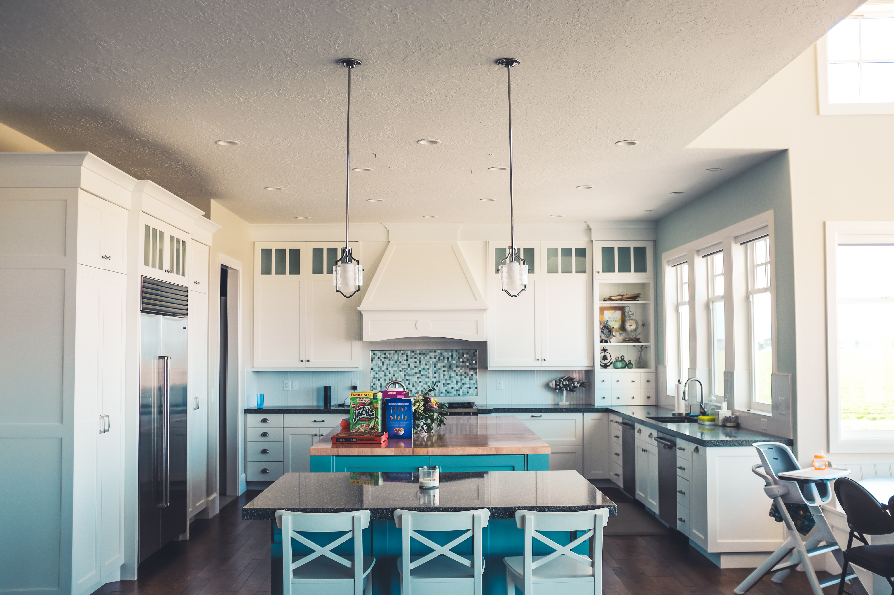

I am ten years old again. My sister and I sit cross‑legged on the kitchen floor with a bowl of fries between us. The grease leaves translucent maps on the paper towels. She steals the crispest fries one by one and I chase her around the table until we collapse in a heap, laughing so hard our stomachs hurt.
There is no foreshadowing here. No secret signs. It is an afternoon filled with nothing special: ketchup, cartoons in the background, the hum of the refrigerator. That nothingness is what makes it precious now. If ghosts cling to anything, they cling to moments like this—mundane and radiant, forgotten until they are all you want back.
When I remember this, it hurts more than any betrayal. It makes my throat ache with longing. I want to press my cheek to the kitchen linoleum one more time and hear my sister snort as she laughs. I want to take this memory with me to whatever comes next.